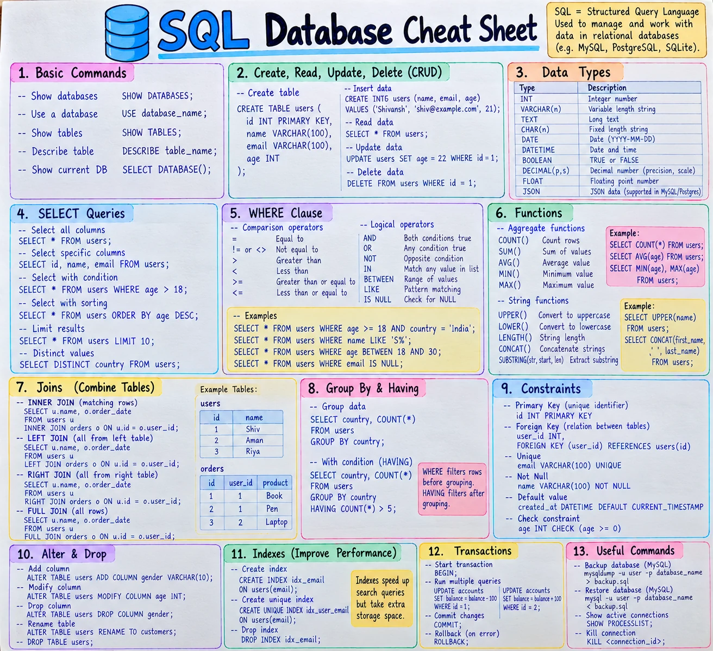

📋 Syntax Cheatsheet
A one-page visual poster, plus a searchable list of SQL syntax below it.
1 SQL cheat sheet poster
The core of SQL on one page. Click the poster to open it full size, or download the high-resolution PNG to print it or keep it on your phone.


⚠️ Three notes on the poster:
- In section 2, "Insert data" reads
CREATE INTG users (...). The correct statement isINSERT INTO users (name, email, age) VALUES (...); - The join examples select
o.order_date, but the sampleorderstable has no such column (it hasid, user_id, product). Useo.productto run them against that table. - The poster uses MySQL commands (
SHOW DATABASES,mysqldump), but MySQL has noFULL JOIN. That example works in PostgreSQL and SQL Server; in MySQL you combine a LEFT and a RIGHT JOIN withUNION.
🔍 Search every command
| Syntax | Description |
|---|